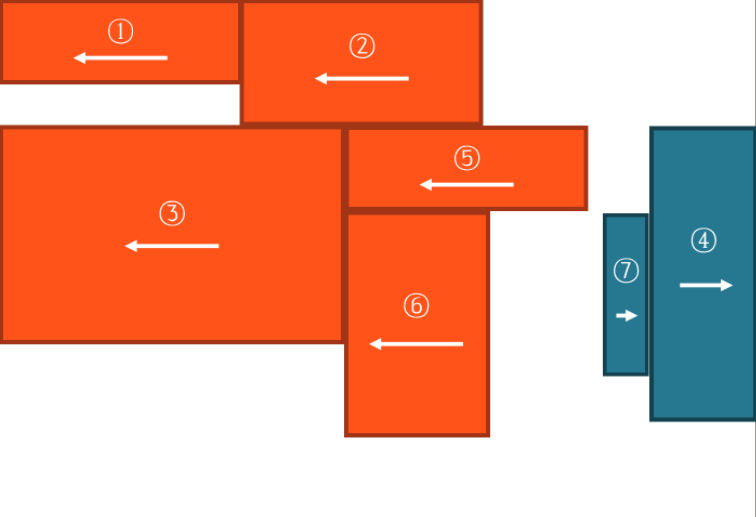

一、典型应用场景
文字环绕
横向排列
二、浮动的基本特点
- 属性值
left：左浮动，元素靠上考右排列
right：右浮动，元素靠上靠右排列
默认值：none，即常规流
- 当一个元素浮动后，元素必定为块盒
- 自动更改display属性为block
- 浮动元素的包含块，和常规流一样，为父元素内容盒
三、盒子尺寸
宽度是auto时，适用内容宽度
高度为auto时，适应内容高度
margin为auto时，为0
除高度的百分比设置，是相对于包含块的宽度
高度的百分比也和常规流一样
四、盒子排列
左浮动的盒子靠上靠左排列，右浮动的盒子靠上靠右排列
块盒：排列时无视浮动盒子
行盒：排列时会避开浮动盒子
- 如果文字没有在行盒中，浏览器会自动生成一个行盒包裹文字，该行盒叫做匿名行盒
浮动盒子在包含块中排列时，会避开常规流块盒
外边距和并不会发生
五、高度坍塌
高度坍塌根源：常规流盒子的自动高度，在计算时不会考虑浮动盒子
解决方式：清除浮动
涉及CSS属性：clear
默认值：none
left：清除左浮动，该元素必须出现在所有左浮动盒子的下方
right：清除右浮动，该元素必须出现在所有右浮动盒子的下方
both：清楚左右浮动下方，该元素必须出现在所有浮动盒子的下方
六、浮动的细节规则
左浮动的盒子向上向左排列
右浮动的盒子向上向右排列
浮动盒子的顶边不得高于上一个盒子的顶边
若剩余空间无法放下浮动的盒子，则该盒子向下移动，直到具备足够的空间能容纳盒子，然后再向左或向右移动
